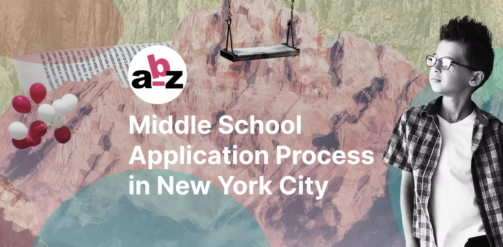
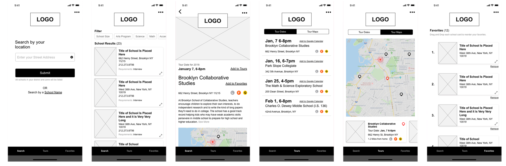
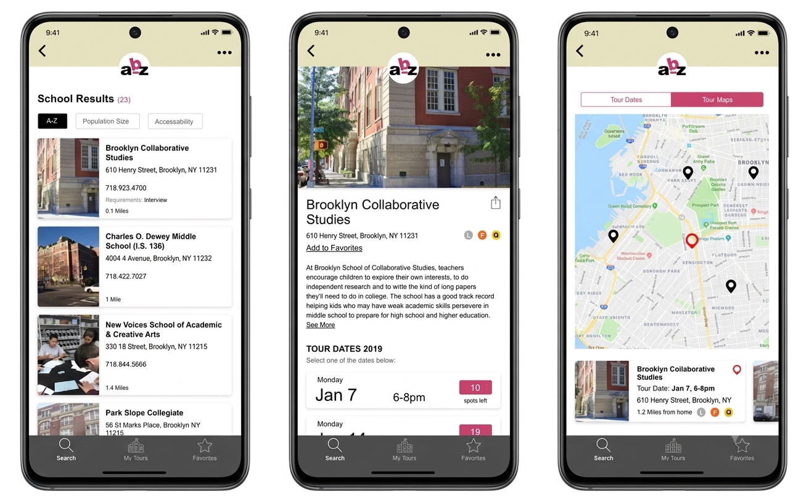

B2C Product Design · Exploration
ABZ NYC Middle School App
Designer · Timeframe: 2 months · Team: Solo project

Overview
Applying to Middle School in NYC is a process that creates stress and anxiety for most parents. It did for me!
This exploration examines how we might help NYC parents get the middle school information they need more quickly and efficiently during the application process.
The Problem
Families face challenges every December during the Middle School Application Process
They must gather information from a number of websites, attend school tours, and at times rely on reviews from other parents. A real time commitment!
One parent coordinator would advise parents during this time to: "Breathe" – Amy Sumner, Parent Coordinator PS 146
The Research
Goal
Validate that the current NYC Middle School Application process is complex for most families. Learn from this user research if there are ways to alleviate the stress before and during the application process.
User Interviews
I interviewed 10 parents (and 3 teachers) all from Brooklyn, NY
Parent Demographic: 35-60 year olds, male and female parents of current 5th Graders, who are engaged in their children's education.
Key Findings: Frustrations
What parents struggled with during the process
- "This should not be like buying concert tickets" – 9/10 parents said that school tours were necessary. 10/10 dislike the current process where scheduling school tours involves being first to get spots before they fill up
- "Time Commitment, but worth it" – The process requires significant time investment (one parent wanted access to virtual tours)
- Community Influence: "Not interested in user comments" – Parents found that "word of mouth is helpful but not the way to make a school choice" and "personal parent reviews can be problematic" and not always reliable
Key Findings: Desires
What parents wished they had
- "Eliminate the tour scheduling process..." – Streamline the booking experience
- "Interested in Demo Data" – Access to demographic information
- "Give me a list of 5 top fit schools" – Personalized recommendations
- "Online preference selector would be good" – Interactive filtering tools
Assumptions
I wanted to make this product a place for parents to create a community where they could share their knowledge as well as schedule tours.
The Hypothesis
Creating a product where parents get all the information they need in one place
- Scheduling school tours
- Keeping a log of the schools of interest
This will ensure families have enough insights about a school to make informed choices. Plus save time!
Competitive Research
Direct Competitors: InsideSchools, NYC Department of Education, GreatSchools
Adjacent Products: Zillow, teamSNAP
Comparative Analysis
Inspiration for Tour Scheduling Feature
Studied scheduling interfaces from OpenTable (restaurant reservations), Calendly (appointment booking), and Zocdoc (doctor appointments) to understand best practices for availability selection and confirmation flows.
Wireframes
Six-screen mobile flow
- Search by location: Users can search by their district based on home location or by school name
- Filter results: Filter by school size, program type (IVS Program, Science, Math, etc.) with detailed results listing
- School detail screen: View school information with tour dates and ability to add to favorites or see more details
- Tour dates: Overview of all available dates with Add to Calendar functionality and map integration
- Tour map: See all scheduled school tour locations at a glance with distance information from home address
- Favorites: Keep a log of all schools of interest to help with preference order before the actual Department of Education application

Mobile wireframe flow: search, filter, school details, tour scheduling, map view, and favorites. Text is placeholder.
Final Designs
A passion project exploring solutions to a real problem
This project was a personal exploration born from my own experience navigating the NYC middle school application process. As both a parent and a designer, I saw an opportunity to reimagine how families could approach this stressful period. While this remains an exploratory concept, the research and design work validate that there's a genuine need for tools that simplify school discovery, tour scheduling, and decision-making for NYC parents.

Key screens showing search, school details, and tour scheduling interface
Video walkthrough. Text is placeholder.
Next Steps
If this exploratory project were to continue, these are the features I'd prioritize based on user feedback:
Notes/Checklist Feature: Parents expressed a wish to see a notes section. Competing with an actual pen and paper or a notes app might not be the right approach, but a checklist feature of top aspects of a school might serve parents better. This would require further usability testing.
Tour Recording: Parents also expressed a wish to record part of the tours. This is another feature I'd explore in my next steps.
Enhanced Filtering: A more robust filtering feature to search for schools across NYC – guided tour with questions that result in a detailed personalized list of choices.
Project presentation with audio narration. Some address inaccuracies appear - text is placeholder only.